===========================================================================================
ImgMesh Online Manual
===========================================================================================
Contents
Chapter1: About ImgMesh
ImgMesh is an image-based light interactive mesh generation software. The software includes four modules:
image, point cloud, surface mesh and tetrahedral. It is a tool for transforming micro or macro images or point
clouds of structures or materials into simulation mesh.
Chapter2: Quick Start
Click ImgMesh.exe to start the program. The command line window is used to output information. Including the info,
warning and error messages, as shown in Fig.0.
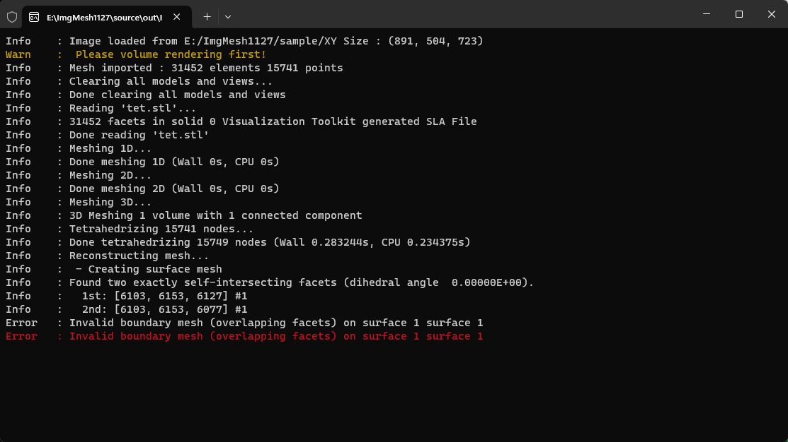
Fig.0 The cmd window of ImgMesh
The main window of ImgMesh is shown in Fig.1, including menu, toolbars, model tree, viewport, and status bar.
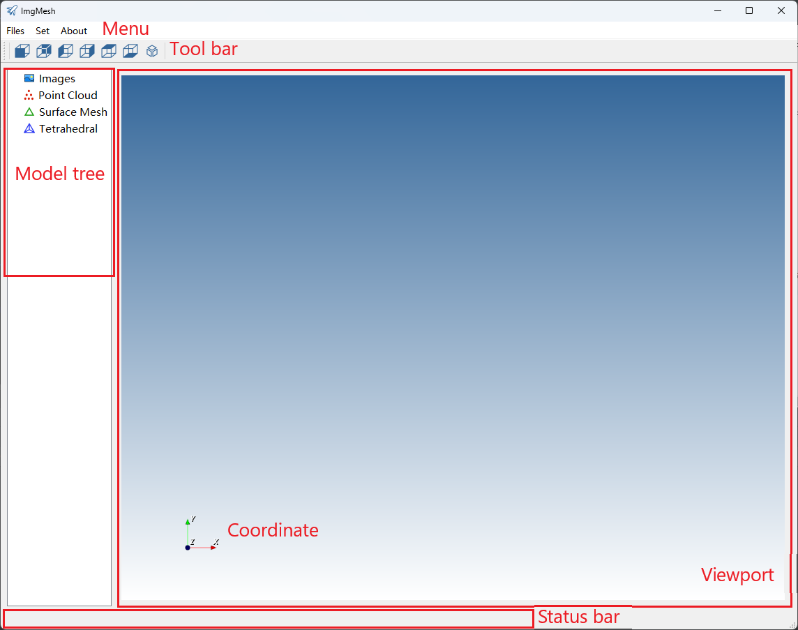
Fig.1 The main window of ImgMesh
Chapter3: Image
3.1 Importing images
Importing grayscale or binarized images by Files-Import-Images.
Supported formats including *.bmp, *.tif, *.png, *.jpg. The user can select one or
more images to import. When only one image is selected, a 2D triangle or quadrilateral mesh is created.
3.2 Image volume rendering
After the images are imported, the image project will created in the model tree, using the first image as the
project name by default.
The user can select the image in the model tree and click the Volume rendering to
render the image.Take the images in sample-YZ as an example, the rendered image is shown in Fig.2.
Areas with a grayscale value of 0 are not displayed by default.User can adjust the grayscale range by the
Interactive threshold function.
In Set-options, user can display the image's bounding box and customize the
rendering color.

Fig2 Volume rendering of sample-YZ
3.3 Image orthographic views
ImgMesh can reconstruct the images in three directions. Clicking Ortho views,
orthogonal views will be shown in a new window. Adjusting the slider to change the position of the image slice.
Users can click on any position to check the coordinates and the grayscale value of that point as shown in Fig.3.
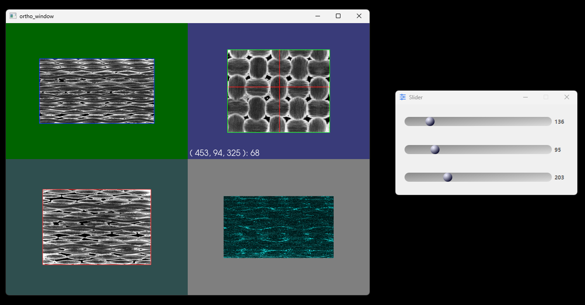
Fig3 Orthographic views of sample-YZ
3.4 Interactive thresholding
ImgMesh has the function of image threshold segmentation. Click Interactive thresholding,
and set the appropriate threshold value. Based on the difference in the gray level of each part, you can segment
the image of different part or extract the pores. The segmented image will be displayed in the model tree. User can
export the image to one of four formats: *.jpg, *.png, *.bmp, *.tif as shown in Fig. 4.
Note: You must first reconstruct imagedata with Volume rendering before image threshold
segmentation.
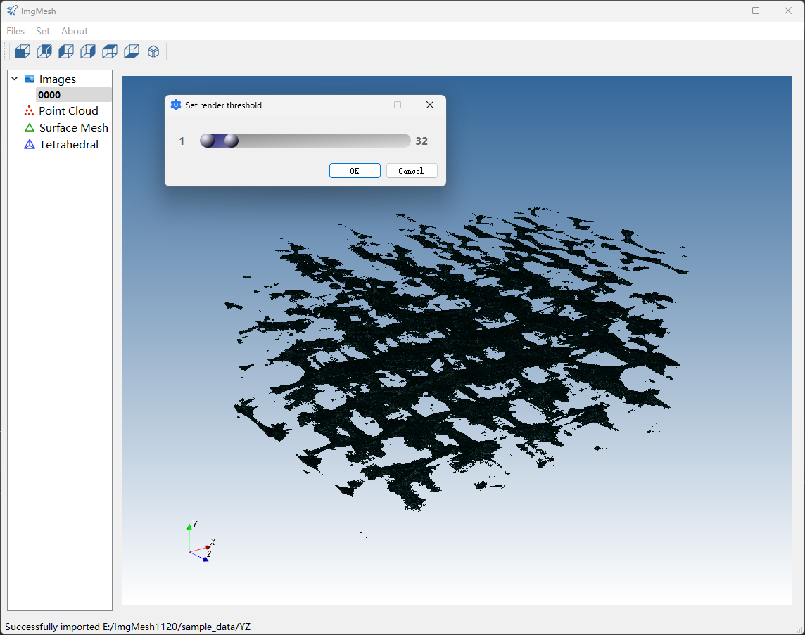
Fig4 Threshold segmentation of sample-YZ
ImgMesh defaults to Gaussian smoothing of the image before image segmentation. Gaussian smoothing is required to
define weights based on the distance of the pixel from the center of the template. The weights are calculated
using a Gaussian distribution, and the further away from the center, the smaller the weight. As shown in the Fig5,
the ImgMesh performs 3D Gaussian filtering by default, Dimensionality() is the number of dimensions,
RadiusFactor() is the size of the Gaussian template, and is taken to be 0 when it is out of the range of the template;
StandardDeviation() is the standard deviation of the Gaussian distribution function.
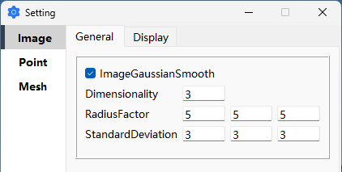
Fig5 Gaussian smooth set
Chapter4: Point cloud
ImgMesh provides two methods for extracting point cloud, based on 2D canny and 3D canny edge detection.The
points rendering color and size can be changed in Set-Options-Point-Display.
The created point cloud project will be displayed in the model tree and can be rebuilt by clicking
reconstruction.
4.1 2D canny edge detection
For structures with little variation in cross-sectional shape and 2D image data, ImgMesh will interval sampling to extract the
point cloud. The parameters need to be set up as shown in Fig.6, including:
(1) Input data.
(2) Slice interval: If empty, ImgMesh will automatically calculate the appropriate interval according to the node distance.
(3) Point distance: the ideal distance between neighboring points, generally equal to the ideal mesh size.
(4) DP Threshold: the threshold value for extracting feature points.
(5) Slice Range.
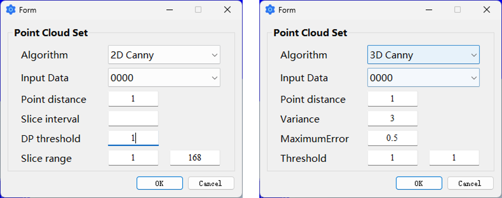
Fig6 Point cloud creation set
For cases where there are multiple closed contours in the image, ImgMesh will automatically recognize the boundaries
and holes and label them as shown in the Fig.7. Noting that: Only the structure of parent
contour-multiple child contours is supported, more complex nesting is not supported.
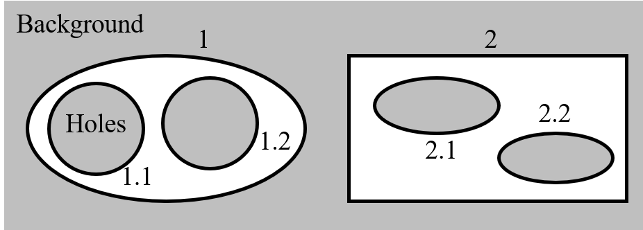
Fig7 Boundary relations
4.2 3D canny edge detection
For structures with little variation in cross-sectional shape and 2D image data, ImgMesh will interval sampling to extract the
point cloud. The parameters need to be set up as shown in Fig.6, including:
(1) Input data.
(2) Point distance: the ideal distance between neighboring points, generally equal to the ideal mesh size.If the
value is greater than 1, downsampling will be performed automatically after edge recognition.
(3) Variance: Gaussian smoothing kernel size.
(4) MaximumError: Gaussian smoothing max error.Range (0,1).
(5) Thrreshold: Lower threshold and upper threshold.
4.3 Downsampling
In Set-Options-point-general, user can define the parameters and algorithms
for downsampling, as shown in Fig. 8.
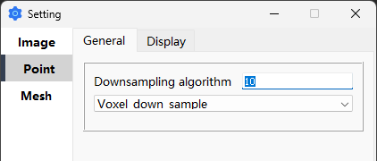
Fig8 Downsampling set
Chapter5: Surface mesh generation
ImgMesh provides five methods for surface reconstruction:including Greedy_Crust, marching cubes, and three
open3d reconstruction algorithms: alpha shapes, poisson and ball pivoting. Users can customize the mesh generation
steps in set.We recommend users to choose the Greedy-crust algorithm, which has the best applicability and
reconstruction results.Several examples are provided to help the user familiarize with the parameter settings.
4.1 Planar triangle/ quadrilateral mesh generation
Taking a lithium battery separator image as an example, the original image is imported to ImgMesh as shown in the Fig.9.
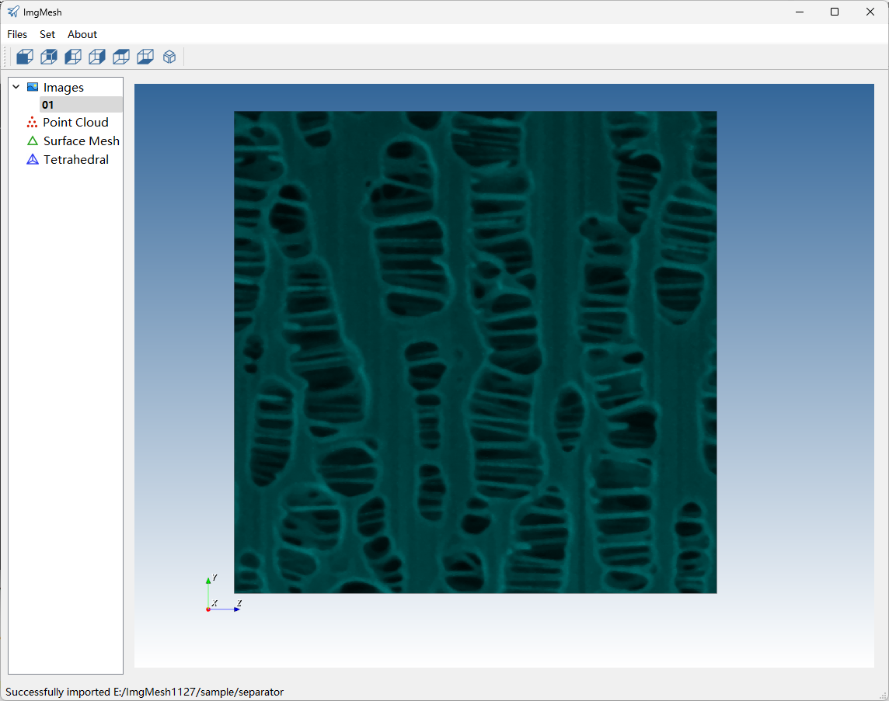
Fig9 Separator image
Set the threshold range in 0-45, the binary image is shown in the Fig.10.
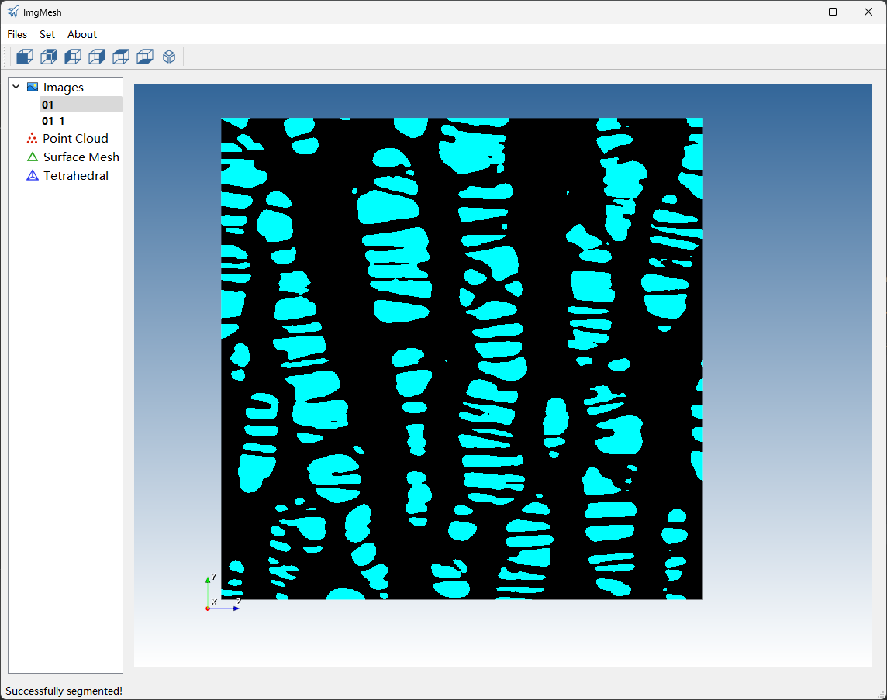
Fig10 Segmented image of
Set mesh_size=10 pixel, Dp threshold=20 pixel, ImgMesh will create planar geometry and complete mesh delineation
through Gmsh library after extracting point cloud data.Users can choose whether to create an area mesh with a gray
value of 0. The created mesh is shown in Fig.11 and Fig.12.

Fig11 Separator mesh without background
Fig12 Separator mesh with background
If the mesh is exported in Inp format, a separate set
is created for each region of the mesh labeled by different color, making it easier for the user to define the
material in Abaqus, as shown in Fig13.

Fig13 Separator mesh set in Abaqus
4.2 Spatial surface mesh generation
The greedy algorithm has 5 parameters to set. Firstly a point cloud field is created outside the point cloud
data before delaunay meshing is done to generate the boundary tetrahedra. The density and size of the external point
cloud field is defined by Offset and N. ImgMesh first calculates the area of the enclosing box as [(x_min,x_max)
(y_min,y_max) (z_min,z_max)], and the side lengths Lx= x_max - x_min, Ly= y_max - y_min, Lz= z_max - z_min. The
points are created in area [(x_min-Offset*Lx,x_max+Offset*Lx) (y_min-Offset*Ly,y_max+Offset*Ly) (z_min-Offset*Lz,
z_max+Offset*Lz)]. The number of points on each edge is N. The point cloud field is shown in Fig.13. These parameter
can be adjusted if mesh generation failed.
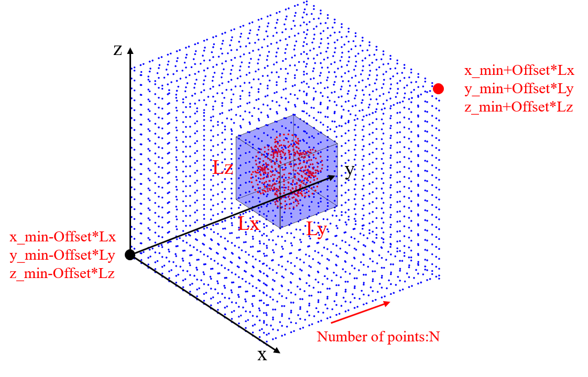
Fig14 Parameter Offset and N
IF is the tetrahedral crossover coefficient threshold that defines the seed triangles, any trianges less than
this value will be defined as seed triangles for the start of the reconstruction.The calculation formula is as
follows:
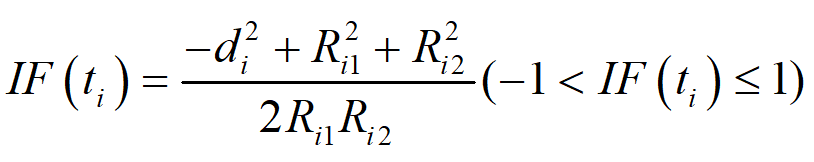
Where di is the distance between the centers of the tetrahedra attached to triangle ti,
Ri1 and Ri2 are the radii of the tetrahedrons circumscribed sphere.
The θ_sliver is the angle threshold for removing of sliver triangles, default value is 120°.
Changing the θ_flat gives a better reconstruction in the tip area,
and it is recommended to set to 0 when the point cloud is smooth.Users can also create open mesh by turning on the
open mesh checkbox in the settings.
The following are examples of reconstruction of different point clouds:
1 Open mesh
Take the sample-data-pointcloud-pipes.txt of the pipes as an example, the parameters and reconstruction are shown in Fig.15.
ImgMesh can also fill mesh holes and create tetrahedral mesh.
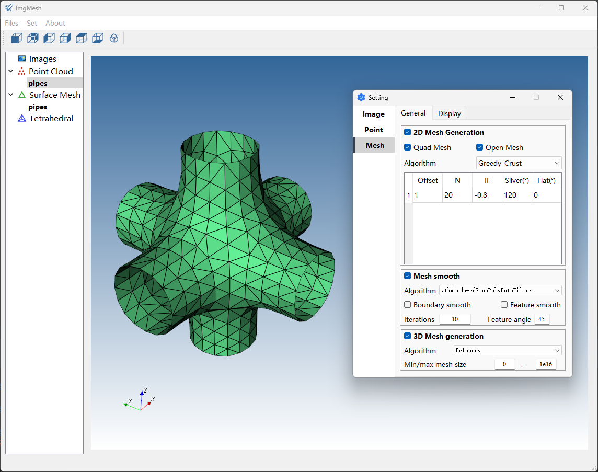
Fig15 Open mesh of pipes
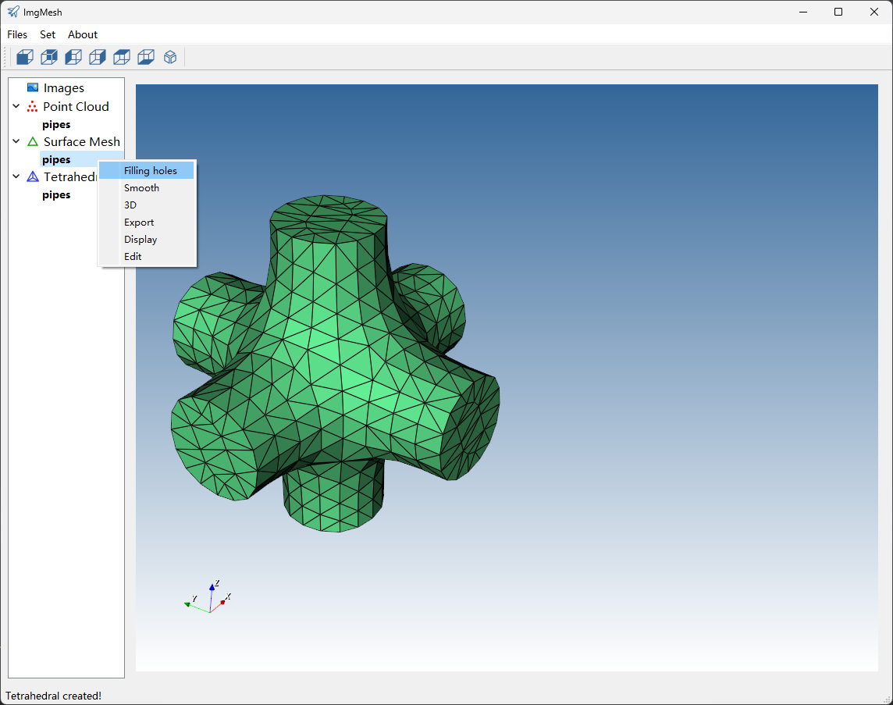
Fig16 Close mesh of pipes
2 Close mesh
Taking a fiber bundle image as an example, the parameters are set as shown in Fig.17. The image contains multiple
contours, and the contours are detected using the 2D canny algorithm, and the point cloud are reconstructed by our
greedy-crust algorithm.

Fig17 Fiber bundle mesh
Due to the edge characteristics of the fiber bundles, the distorted elements are unaviodable. In
Set-Options-Mesh-Display, user can turn on 2D mesh check to detect the holes and
non-manifold triangles in the mesh. By changing the display style, user can locate the position of the distorted
triangles quickly as shown in Fig.18.
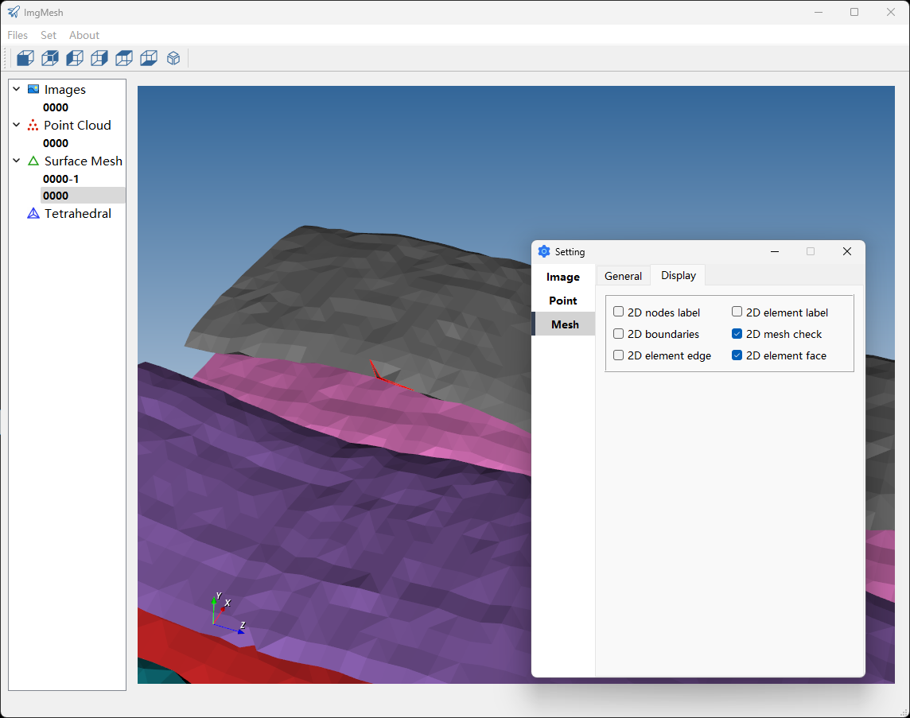
Fig18 Mesh check
After locating the disorted triangle, the user can click on the mesh project in the model tree to open the
mesh editing interface. Click Element-delete to start the mesh deleting , click
left mouse to select the cell, and right mouse to deselect. After the selection is completed,
click element-delete again to confirm the deletion.
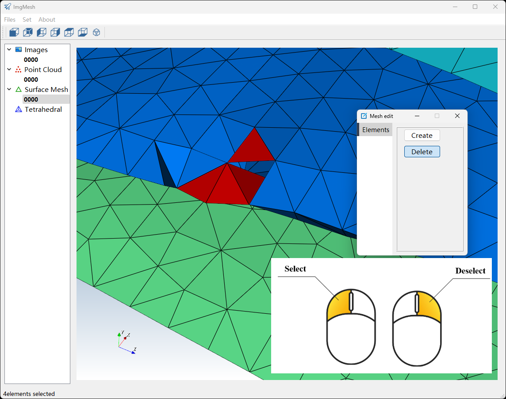
Fig19 Mesh deletion
After deletion, user can create the element manually. Click on Element-Create and
select three points by mouse click to create the element automatically.
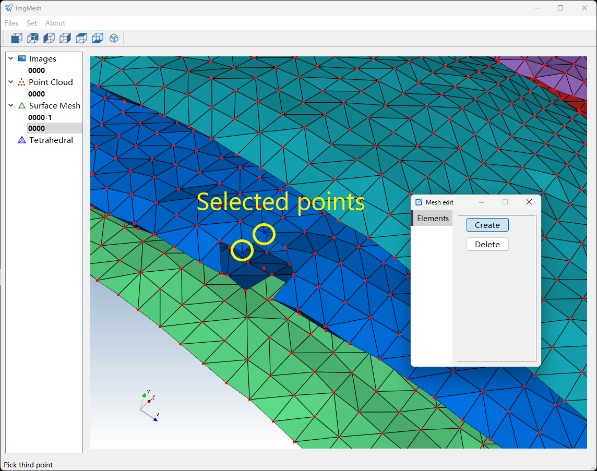
Fig20 Mesh creation
Once the mesh is reconstructed without errors, right-click on 3D to generate the
tetrahedron.
Chapter6: Tetrahedron generation
Once the mesh is reconstructed without errors, right-click on 3D to generate the
tetrahedron as shown in Fig.20. Both the generated surface mesh and tetrahedral mesh can be exported in various formats.
Gmsh output info are diaplayed in command window.
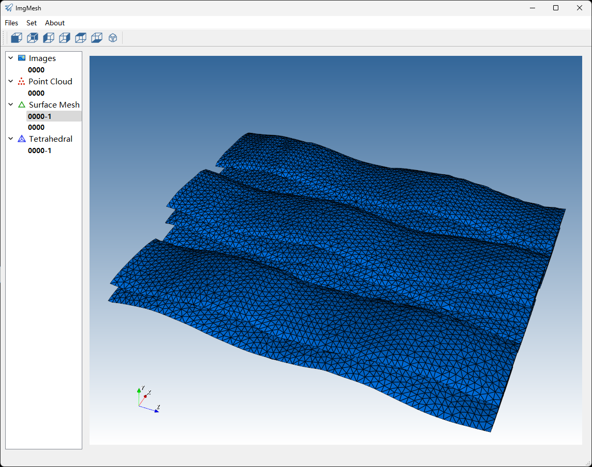
Fig21 Tetrahedral mesh